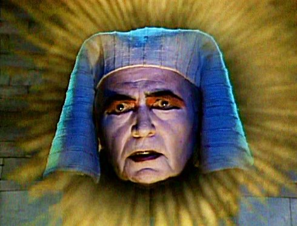

Invest in Failure
(Notes on Film 06 C/ Monologue 03)

Norbert Pfaffenbichler
|
AT
2018 Concept & Realisation: Norbert Pfaffenbichler – V: sixpackfilm, Wien
|
monday 15 oct 10.30 pm werkstattkino
An end game that spans a career and a globe (down to 20,000 miles under the sea): whereas previously, in his Monologue series devoted to the horror icons Lon Chaney and Boris Karloff Norbert Pfaffenbichler paid tribute to the actors exclusively with found-footage in which he had them interact solely with themselves, he takes a different path in his equally amusing and abysmal film study INVEST IN FAILURE . This time he covers half a century based on excerpts from the 160 works of the elegant Englishman James Mason—in contrast to Karloff and Chaney, an actor who (other than the process of aging), seems almost changeless. As a brooding romantic anti-hero, in the post-war years, Mason made the leap to become a Hollywood star, to then travel nearly all continents and genres as a co-production globetrotter from the 1960s onward. (Sixpackfilm)
Norbert Pfaffenbichler Born 1967 in Steyr. 1994-2001 University of Applied Arts, MK for Media. Artist and curator, various participations in festivals and exhibitions, founding member of VIDOK and lanolin.
|
| Films notes on film 01 else 2002 (1. UX) – Notes on Film 02 2006 (1. UX) – Mosaik mécanique 2007 (3. UX) – Conference Notes on film 05 2011 – Git Cut Noise 2011 – Intermezzo (Notes on Film 04) 2012 (7. UX) – A Messenger From The Shadows (Notes on Film 06 A/Monologue 01) 2013 (9. UX)
|